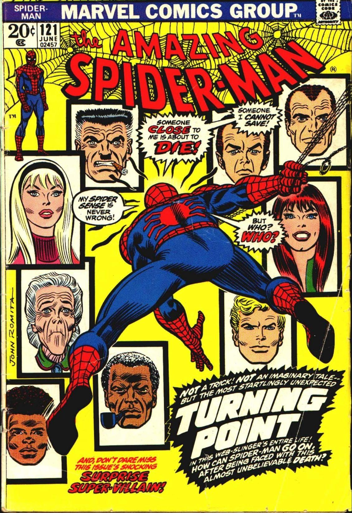
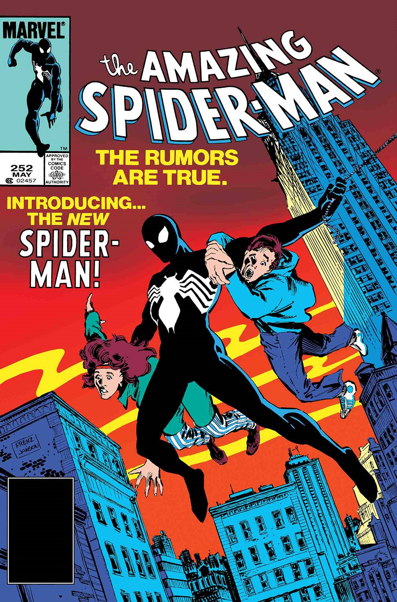
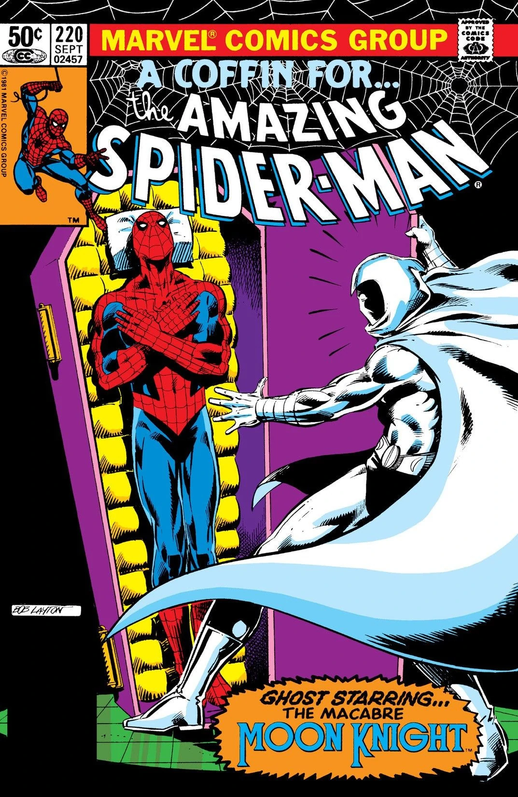
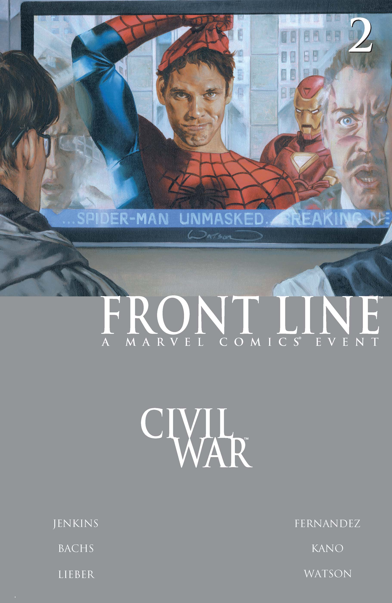
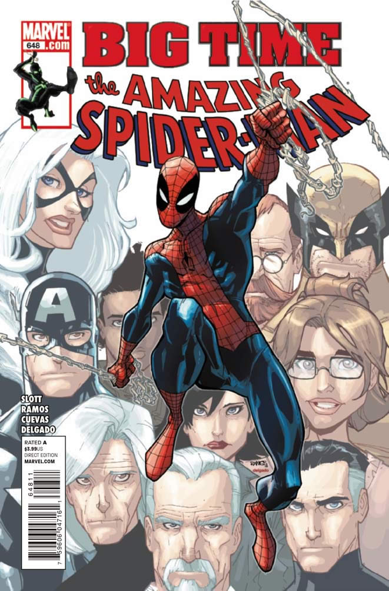
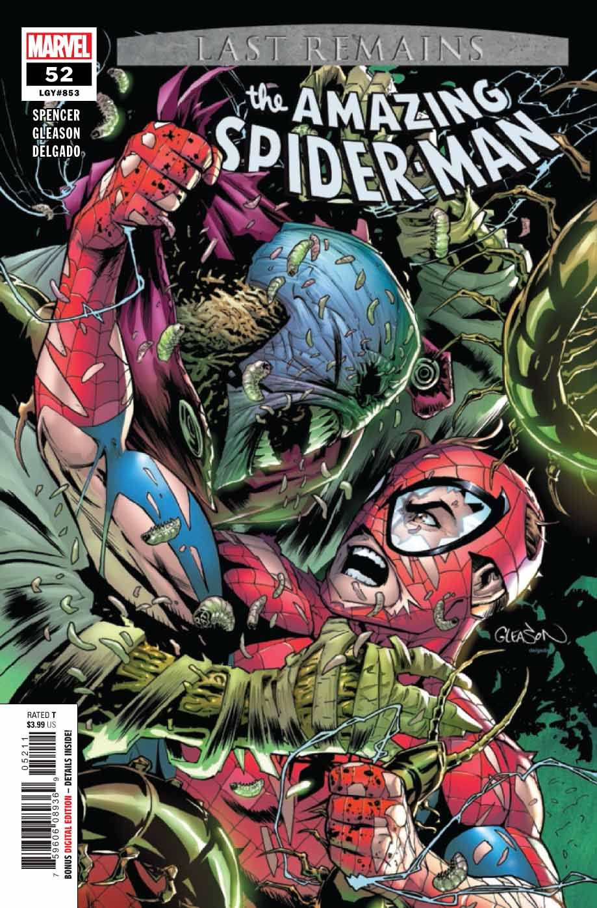
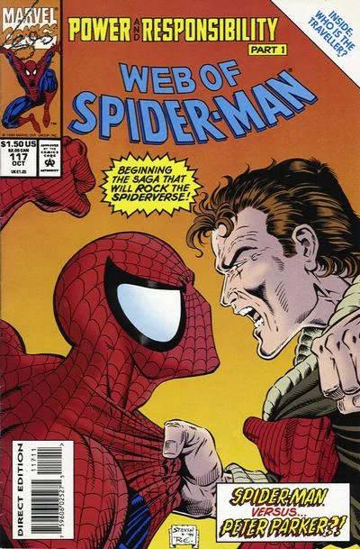
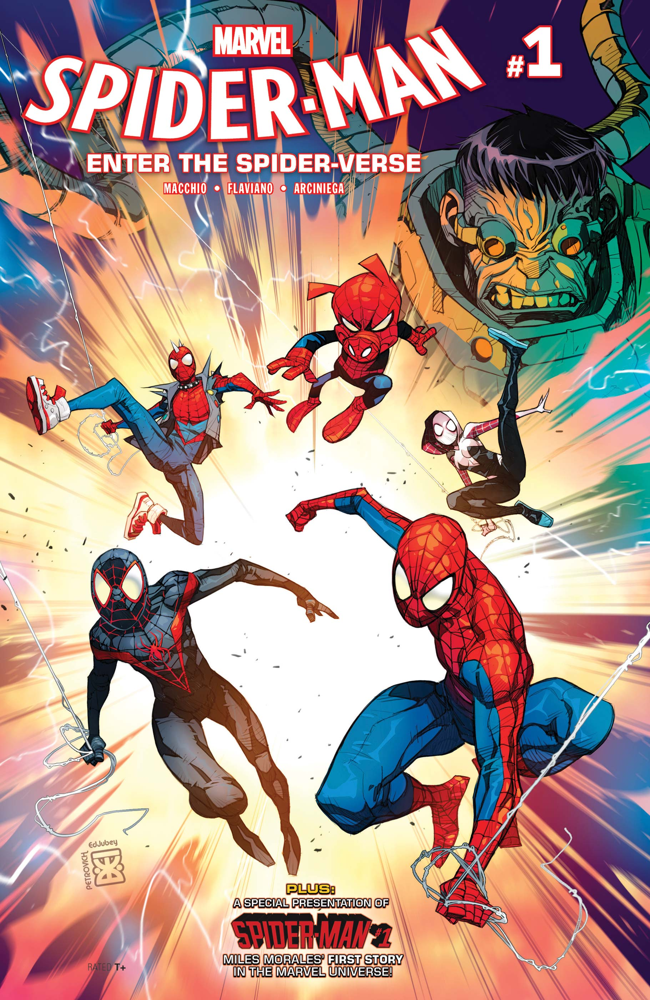

Spider Man
Spider-Man is a fictional superhero created by writer-editor Stan Lee and writer-artist Steve Ditko. He first appeared in the anthology comic book Amazing Fantasy #15 (Aug. 1962) in the Silver Age of Comic Books. He appears in American comic books published by Marvel Comics, as well as in a number of movies, television shows, and video game adaptations set in the Marvel Universe. In the stories, Spider-Man is the alias of Peter Parker, an orphan raised by his Aunt May and Uncle Ben in New York City after his parents Richard and Mary Parker died in a plane crash. Lee and Ditko had the character deal with the struggles of adolescence and financial issues, and accompanied him with many supporting characters, such as J. Jonah Jameson, Harry Osborn, Max Modell, romantic interests Gwen Stacy and Mary Jane Watson, and foes such as Doctor Octopus, the Green Goblin and Venom. His origin story has him acquiring spider-related abilities after a bite from a radioactive spider; these include clinging to surfaces, superhuman strength and agility, and detecting danger with his "spider-sense." He then builds wrist-mounted "web-shooter" devices that shoot artificial spider-webbing of his own design.

Early years
in Forest Hills, Queens, New York City, Midtown High School student Peter Benjamin Parker is a science-whiz orphan living with his Uncle Ben and Aunt May. As depicted in Amazing Fantasy #15 (Aug. 1962), he is bitten by a radioactive spider (erroneously classified as an insect in the panel) at a science exhibit and "acquires the agility and proportionate strength of an arachnid". Along with heightened athletic abilities, Parker gains the ability to adhere to walls and ceilings. Through his native knack for science, he develops a gadget that lets him fire adhesive webbing of his own design through small, wrist-mounted barrels. Initially seeking to capitalize on his new abilities, Parker dons a costume and, as "Spider-Man", becomes a novelty television star. However, "He blithely ignores the chance to stop a fleeing thief, his indifference ironically catches up with him when the same criminal later robs and kills his Uncle Ben." Spider-Man tracks and subdues the killer and learns, in the story's next-to-last caption, "With great power there must also come—great responsibility!"
Despite his superpowers, Parker struggles to help his widowed aunt pay the rent, is taunted by his peers—particularly football star Flash Thompson—and, as Spider-Man, engenders the editorial wrath of newspaper publisher J. Jonah Jameson. As he battles his enemies for the first time, Parker finds juggling his personal life and costumed adventures difficult. In time, Peter graduates from high school, and enrolls at Empire State University (a fictional institution evoking the real-life Columbia University and New York University), where he meets roommate and best friend Harry Osborn, and girlfriend Gwen Stacy, and Aunt May introduces him to Mary Jane Watson. As Peter deals with Harry's drug problems, and Harry's father is revealed to be Spider-Man's nemesis the Green Goblin, Peter even attempts to give up his costumed identity for a while. Gwen Stacy's father, New York City Police detective captain George Stacy is accidentally killed during a battle between Spider-Man and Doctor Octopus (issue #90, November 1970).
1970s
In issue #121 (June 1973), the Green Goblin throws Gwen Stacy from a tower of either the Brooklyn Bridge (as depicted in the art) or the George Washington Bridge (as given in the text). She dies during Spider-Man's rescue attempt; a note on the letters page of issue #125 states: "It saddens us to say that the whiplash effect she underwent when Spidey's webbing stopped her so suddenly was, in fact, what killed her." The following issue, the Goblin appears to kill himself accidentally in the ensuing battle with Spider-Man.
Working through his grief, Parker eventually develops tentative feelings toward Watson, and the two "become confidants rather than lovers". A romantic relationship eventually develops, with Parker proposing to her in issue #182 (July 1978), and being turned down an issue later. Parker went on to graduate from college in issue #185, and becomes involved with the shy Debra Whitman and the extroverted, flirtatious costumed thief Felicia Hardy, a.k.a. the Black Cat, whom he meets in issue #194 (July 1979).

1980s
From 1984 to 1988, Spider-Man wore a black costume with a white spider design on his chest. The new costume originated in the Secret Wars miniseries, on an alien planet where Spider-Man participates in a battle between Earth's major superheroes and supervillains. He continues wearing the costume when he returns, starting in The Amazing Spider-Man #252. The change to a longstanding character's design met with controversy, "with many hardcore comics fans decrying it as tantamount to sacrilege. Spider-Man's traditional red and blue costume was iconic, they argued, on par with those of his D.C. rivals Superman and Batman." The creators then revealed the costume was an alien symbiote which Spider-Man is able to reject after a difficult struggle, though the symbiote returns several times as Venom for revenge. Parker proposes to Watson in The Amazing Spider-Man #290 (July 1987), and she accepts two issues later, with the wedding taking place in The Amazing Spider-Man Annual #21 (1987)—promoted with a real-life mock wedding using actors at Shea Stadium, with Stan Lee officiating, on June 5, 1987. David Michelinie, who scripted based on a plot by editor-in-chief Jim Shooter, said in 2007, "I didn't think they actually should [have gotten] married. ... I had actually planned another version, one that wasn't used." Parker published a book of Spider-Man photographs called Webs. and returned to his Empire State University graduate studies in biochemistry in #310 (Dec. 1988).

1990s
In the controversial 1990s storyline the "Clone Saga", a clone of Parker, created in 1970s comics by insane scientist Miles Warren, a.k.a. the Jackal, returns to New York City upon hearing of Aunt May's health worsening. The clone had lived incognito as "Ben Reilly", but now assumes the superhero guise the Scarlet Spider and allies with Parker. To the surprise of both, new tests indicate "Reilly" is the original and "Parker" the clone. Complicating matters, Watson announces in The Spectacular Spider-Man #220 (Jan. 1995) that she is pregnant with Parker's baby. Later, however, a resurrected Green Goblin (Norman Osborn) has Watson poisoned, causing premature labor and the death of her and Parker's unborn daughter. The Green Goblin had switched the results of the clone test in an attempt to destroy Parker's life by making him believe himself to be the clone. Reilly is killed while saving Parker, in Peter Parker: Spider-Man #75 (Dec. 1996), and his body immediately crumbles into dust, confirming Reilly was the clone.
In issue #97 (Nov. 1998) of the second series titled Peter Parker: Spider-Man, Parker learns his Aunt May was kidnapped by Norman Osborn and her apparent death in The Amazing Spider-Man #400 (April 1995) had been a hoax. Shortly afterward, in The Amazing Spider-Man (vol. 2) #13 (#454, Jan. 2000), Watson is apparently killed in an airplane explosion.[80] She turns up alive and well in (vol. 2) #28 (#469, April 2001), but she and Peter become separated in the following issue.

2000s
Babylon 5 creator J. Michael Straczynski began writing The Amazing Spider-Man, illustrated by John Romita Jr., beginning with (vol. 2) #30 (#471, June 2001). Two issues later, Parker, now employed as a teacher at his old high school, meets the enigmatic Ezekiel, who possesses similar spider powers and suggests that Parker having gained such abilities might not have been a fluke—that Parker has a connection to a totemic spider spirit. In (vol. 2) #37 (#478, Jan. 2002), May discovers her nephew Parker is Spider-Man, leading to a new openness in their relationship. Parker and Watson reconcile in (vol. 2) #50 (#491, April 2003), and in #512 (Nov. 2004) the original issue numbering having returned with #500—Parker learns his late girlfriend Gwen Stacy had had two children with Norman Osborn.
He joins the superhero team the New Avengers in New Avengers #1–2. After their respective homes are destroyed by a deranged, superpowered former high-school classmate, Parker, Watson, and May move into Stark Tower, and Parker begins working as Tony Stark's assistant while again freelancing for The Daily Bugle and continuing his teaching. In the 12-part 2005 story arc "The Other", Parker undergoes a transformation that evolves his powers. In the comic Civil War #2 (June 2006), part of the company-wide crossover arc of that title, the U.S. government's Superhuman Registration Act leads Spider-Man to reveal his true identity publicly. A growing unease about the Registration Act prompts him to escape with May and Watson and join the anti-registration underground.

2010s
Spider Man: Big Time
After Osborn's fall and the Registration Act's abolition following the Siege of Asgard, MJ invited Peter over so the two of them could gain closure over the marriage that did not happen and the breakup. Later, a massive war ensued between Doctor Octopus and Spider-Man to get Lily Hollister's and Norman Osborn's son, in which Spider-Man found that the child was actually Harry's, who later leaves town to raise him. Peter then finally starts a relationship with police officer Carlie Cooper. Spider-Man's heroic career rose up again, he joined the reassembled Avengers and also stayed with the New Avengers, who were outlaws no more. He learned that Michele was moving and he could not maintain his apartment anymore. However, Peter found a dream job, thanks to Jameson's wife Marla Madison, as a compensation for Jameson firing him, as a scientist at Horizon Labs where he had access to much more technology and resources while also giving him freedom to come and go as he liked so long as he delivered good results. Spider-Man assisted the Avengers in defeating Doctor Octopus' army of Macro-Octobots. He then faced a new Hobgoblin and the Kingpin, but days later, he lamentably lost Marla in a fight between Alistair Alphonso Smythe's Spider-Slayers.

2020s
Last Remains
Kindred uses the resurrected Sin-Eater's sins to create constructs that attack the ship Spider-Man is on underwater with Miles Morales, Spider-Gwen, Spider-Woman, Anya Corazon, and Julia Carpenter. The sins possess the other spider-heroes, and they attack Spider-Man.
Spider-Man and Doctor Strange manage to hold down a demon-possessed Silk. Spider-Man admits that Sin-Eater is not the one controlling his friends, but another villain named "Kindred." Kindred uses Cindy to escape, and Spider-Man tells Doctor Strange that he didn't tell him the truth because he felt Kindred is his responsibility and admitted that he felt relieved that he threw Norman Osborn the ship and left him to die. Spider-Man tells Doctor Strange that he will take on Kindred, but he needs Doctor Strange's help since demon possession is not what Spider-Man is used to fighting. Doctor Strange agrees to Spider-Man's offer, and gives him the Hand of Vashanti (a magic weapon that Spider-Man used to fight off a mystical villain name Shade in the past) to allow him to go to the astral plane
Finally encountering Kindred, Peter identifies the loved ones who died in his life morbidly arranged in attendance, provoking him to attack Kindred for his desecration of their remains. Peter is easily overwhelmed and thrashed about, asking who Kindred is; the demon merely answering all that matters is who he is now, not who he was. Peter frantically cries that Kindred stop what he's doing to them and kill him in place of their suffering. When Kindred accepts, he frees the Order clean of the sins he coerced into them. Owing to his end of the deal, Kindred then snaps Peter's neck, stating they will go and face the truth together.
During the time Peter was dead, Peter's consciousness remembers the fateful day of the start of One More Day and Kindred accepts to resurrect Peter.

Powers, skills, and equipment
Peter Parker has superhuman abilities derived from mutations resulting from the bite of a radioactive spider.Since the original Lee-Ditko stories, Spider-Man has had the ability to cling to walls. This has been speculated to be based on a distance-dependent interaction between his body and surfaces, known as the van der Waals force,[citation needed] though in the 2002 Spider-Man film, his hands and feet are lined with tiny clinging cilia in the manner of a real spider's feet. Spider-Man's other powers include superhuman strength, speed, agility and balance, a precognitive sixth sense referred to as his "Spider-Sense," which alerts him to danger. In the aftermath of the 1989 "Acts of Vengeance" storyline, Spider-Man was said to have "superhuman recuperative abilities" that sped up his recovery from the exhaustion he suffered in defeating the Tri-Sentinel. The character was originally conceived by Stan Lee and Steve Ditko as intellectually gifted, but later writers have depicted his intellect at genius level. Academically brilliant, Parker has expertise in the fields of applied science, chemistry, physics, biology, engineering, mathematics, and mechanics. With his talents, he sews his own costume to conceal his identity, and he constructs many devices that complement his powers, most notably mechanical web-shooters, to help navigate and trap his enemies along with a spider-signal as a flashlight and a warning beacon to criminals.

Alternate versions of Spider-Man
Within the Marvel Universe there exists a multiverse with many variations of Spider-Men. An early character included in the 1980s is the fictional anthropomorphic funny animal parody of Spider-Man in pig form named Spider-Ham (Peter Porker). Many imprints of Spider-Men were created, like the futuristic version of Spider-Man in Marvel 2099 named Miguel O'Hara. In the MC2 imprint, Peter marries Mary Jane and has a daughter named Mayday Parker, who carries on Spider-Man's legacy and Marvel Noir has a 1930s version of Peter Parker. Other themed versions exist within the early 2000s, such as a Marvel Mangaverse version and an Indian version from Spider-Man: India named Pavitr Prabhakar.
Ultimate Spider-Man was a popular modern retelling of Peter Parker. The version of Parker would later be depicted as being killed off and replaced by an Afro-Latino Spider-Man named Miles Morales.
The storyline "Spider-Verse" brought back many alternate takes on Spider-Man and introduced many newly inspired ones, such as an alternate world where Gwen Stacy gets bitten by a radioactive spider instead, along with a British-themed version named Spider-UK called Billy Braddock from the Captain Britain Corps.
